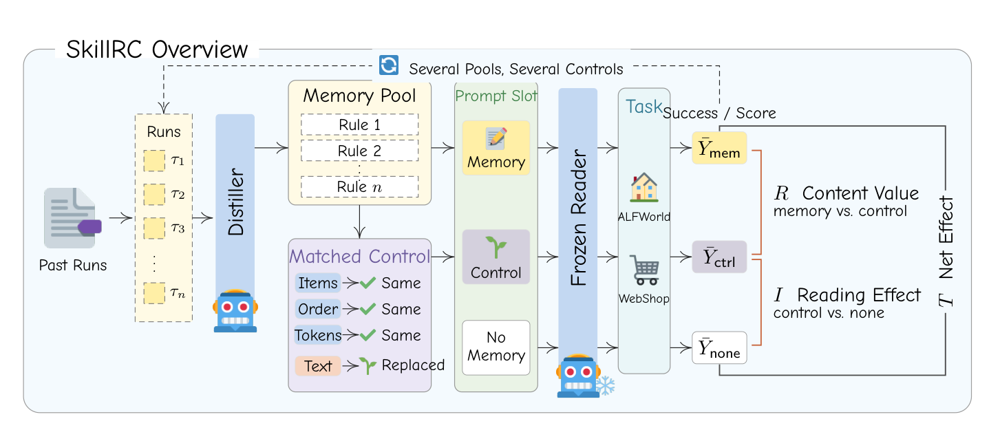

A Gain Is Not Proof of Learning
SkillRC, a reality check for distilled agent memory
Research report, November 2026
The question
A common way to let an LLM agent learn from experience is to distill its past runs into a short list of rules and put the list in its prompt. The usual evidence that this works is a gain over the same agent without memory. Does such a gain show that the agent learned from experience?
Short answer. Not by itself. A memory also adds text to read, and it is one draw from the pipeline that built it. Against matched comparisons, what remains of a gain is modest, depends on the comparison text, and varies between replicate pools about as much as its size.
We compare a memory with a control that keeps everything except its content: the same items, tags, word counts and order, and the same token count under each tested model's tokenizer, with each rule replaced by a sentence about gardening. Control minus no memory gives a reading effect, and memory minus control gives a content value. These are contrasts against a chosen control, so we also compare the memory with rules written without experience and with advice for another environment, and we repeat the comparison over pools built by the same pipeline.

What we found
- Against unrelated text, a memory's value is modest. Over many pools the content value is +5.0 points for Llama-3.1-8B and +3.9 for Qwen3-8B, and for Qwen3-14B and Qwen3-32B, at +1.3 and +1.2, it cannot be distinguished from zero. The largest value, +9.1, is GPT-4o-mini's on a single pool built from its own successes, chosen because it had helped that model. A net effect can also hide this: Llama-3.1-8B's net of +0.6 combines a reading effect of −4.4 and a content value of +5.0.
- The value depends on what the memory is compared with. Over three pools and two readers, the memory leads gardening text by +3.1 [−0.8, 7.7], generic rules from the same writer by +3.5 [0.2, 7.2], and advice for another environment by only +1.1 [−2.7, 4.9]. We detected no advantage of the generic rules over gardening, so the lead over them may reflect a weak generic list as much as a strong memory.
- The value does not carry over reliably, and it can be negative. Replicate pools differ about as much as the value itself, with a standard deviation of 1.9 points that includes unseparated run variation. For Qwen3-8B, three pools built the same way give 0.0, +6.0 and +10.4. One WebShop pool lowers GPT-4o-mini's score by 15.8 points and Qwen3-8B's by 11.6 against its control, in a harness whose observations do not name the current page.
What this means
A gain on one memory is weak evidence of learning. Adding the control changes nominal gain detection in 11 of 54 evaluations: of 16 net gains on single pools, 8 come with no detected content gain, although this does not show that they are false. Distilled memory is not worthless, since for two readers rules beat their own scrambled words, and on three pools they beat generic rules from the same writer. For claims that a gain comes from experience, we recommend at least two matched controls and several pools, with the pipeline that builds memories as the unit of evaluation. Per reader, eight pools take 17 runs with one matched control, or 25 with two, against 2 for one with-and-without comparison. The extra runs buy interpretability, and any benefit for decision accuracy remains to be shown.
How it was tested
Six studies on ALFWorld and WebShop with six readers (GPT-4o-mini, GPT-4.1-mini, Llama-3.1-8B, Qwen3-8B, Qwen3-14B, Qwen3-32B) and 24 ALFWorld pools. Predictions and analyses were written down before the runs, except for one addendum written after two hosted readers had been analysed. The contrasts are relative to the chosen control and do not identify a topic-independent reading cost or an experience-specific learning effect. The memories are short rule lists placed whole in the prompt, so the results do not speak to frontier models or long procedural skills. The same-window configurations and summaries are not yet public.
Citation
@misc{lu2026skillrc,
title = {A Gain Is Not Proof of Learning: {SkillRC},
a Reality Check for Distilled Agent Memory},
author = {Lu, Yiwen},
year = {2026},
note = {Research report},
url = {https://eveneureka.github.io/SkillRC/}
}